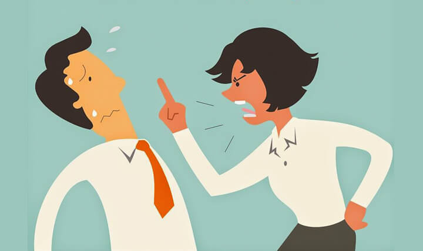

Reflexión 1: El Grito en la Oficina
Durante una reunión de proyecto, Carlos, el líder del equipo, se enfureció porque el diseño no estaba listo. En lugar de preguntar las razones, golpeó la mesa y gritó: "¡Es increíble que siempre sea lo mismo! Si no pueden con esto, mejor ni vengan mañana". El equipo quedó en silencio absoluto, bajaron la mirada y el ambiente se volvió tenso y desmotivador.

Análisis y Solución
Aquí vemos una Comunicación Agresiva. Carlos impone su poder mediante el miedo, lo que anula el canal de comunicación. La Solución: Carlos debe practicar el autocontrol emocional y la asertividad. En lugar de atacar, debería usar la función referencial para preguntar sobre los retrasos y expresar su frustración en primera persona sin agredir al grupo.